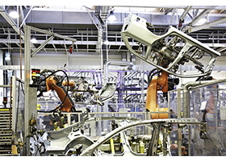
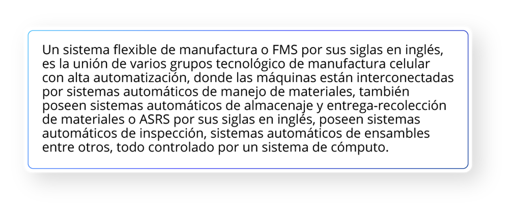
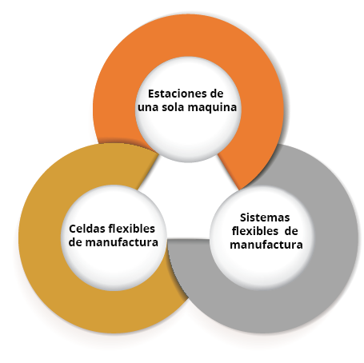
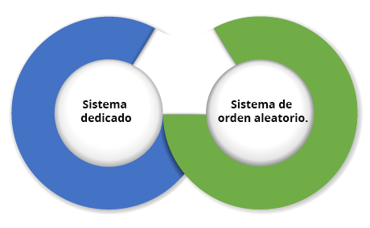

Tema 2
Sistemas Flexibles de Manufactura
Maestro:
Francisco Ruvalcaba Grandos
# Sistemas flexibles de manufactura Los sistemas flexibles de manufactura fueron conceptualizados para procesos de maquinados, por lo que su desarrollo fue posterior al control numérico por computadora. El concepto de sistemas flexibles de manufactura o FMS (por sus siglas en inglés) es atribuido a David Williamson, ingeniero inglés, empleado en ese entonces en la compañía Molins, que patentó el invento en 1965. El concepto actual de las FMS se llamó primero “sistema 24”, ya que planteaba la posibilidad de que un grupo de máquinas de mecanizado podían trabajar durante las 24 horas del día, de las cuales 16 horas lo harían sin la supervisión de ningún operario. El concepto original tomaba en cuenta el control computarizado de las máquinas CNC, la producción de diferentes partes y la capacidad de realizar variadas operaciones con distintas herramientas.  # Sistema Flexible de manufactura (FMS) En 1961 el primer sistema de manufactura flexible fue instalado en los Estados Unidos y en la empresa Ingersoll Rand, ahora Igersoll-Dresser en Roanoke, Virginia. Otras empresas que le siguieron fueron Caterpillar en la fabricación de tractores, John Deere, General Electric, casi todas ellas requiriendo procesos de CNC. En Alemania la primera FMS fue instalada en 1969, en Rusia en 1972 y en Japón en 1985. Para el año de 1985, la cantidad de sistemas flexibles de manufactura en todo el mundo había aumentado a 300, de los cuales un 30% estaba localizado en Estados Unidos. Conforme creció la importancia de la flexibilidad en la manufactura, las empresas empezaron a adoptar sistemas flexibles, sin embargo, por su alto costo era prohibitivo para algunas compañías, por lo que en años recientes se desarrollaron sistemas pequeños y de bajo costo. Unas preguntas que puedes plantearte e investigar es ¿cuándo ingresaron los FMS a México? Y si estos sistemas fueron implementados en empresas con capital mexicano o fueron en compañías transnacionales instaladas en México.  --- # Explicación ## Introducción a los sistemas flexibles de manufactura  Los sistemas flexibles de manufactura operan en condiciones de alta flexibilidad, donde pueden producir dos o más productos con características similares en la misma planta de producción y puede cambiar de modelo con menor tiempo de preparación. Sus características son las siguientes: - Posee grupos de trabajos formados por un grupo determinada de integrantes responsables de un proceso completo en la producción de un bien o para la prestación de un servicio. - Los trabajadores son multifuncionales, capacitados para realizar distintas actividades dentro de su centro de trabajo. - Existe un máximo de aprovechamiento de los recursos humanos y materiales involucrados en el proceso. - Competitividad incrementada por resultados rentables, productos o servicios. - Alta flexibilidad ante los cambios en procesos. - Total aprovechamiento de las áreas de trabajo. - Reducción de inventarios de producción. El concepto de sistemas flexibles de manufactura a menudo se refiere a un sistema de grandes aplicaciones tecnológicas, el cual se puede desarrollar por la integración de dos o más celdas de manufactura bajo el concepto de computadora integrada a la manufactura o CIM por sus siglas en ingles. Los sistemas flexibles de manufactura incorporan a menudo metodologías como *Just in Time, KanBan, TQM, Poka Yoke, Kaizen*, entre otras. Los sistemas flexibles de manufactura toman los conceptos de la tecnología de grupos, ningún sistema de manufactura puede ser completamente flexible, existen límites en el rango de partes a fabricar, acorde a esto, están diseñados para producir partes o productos limitados a un rango de procesos, de formas y de materiales. La alta automatización del sistema es una característica importante que los diferencia de otros sistemas de manufactura, como lo pueden ser la manufactura celular y las líneas de ensamble. El término de flexibilidad de un sistema de manufactura se relaciona con los siguientes puntos: - La habilidad para poder identificar y manejar diferentes partes o productos en el sistema - Capacidad de cambiar rápidamente de operaciones - Capacidad de cambiar rápidamente el set up de productos Para saber si un sistema es flexible debería de satisfacer ciertos criterios. Las siguientes cuatro preguntas son una prueba para definir si el sistema es flexible: - ¿El sistema puede procesar diferentes partes en no modo de lote? - ¿El sistema puede aceptar cambios rápidos en la programación de la producción? - ¿El sistema pude recuperarse exitosamente de una mal función en los equipos? - ¿Partes nuevas pueden añadirse al sistema con relativa facilidad? Si la respuesta es sí a las 4 preguntas, entonces el sistema puede considerarse flexible. ## **Clasificación de los sistemas flexibles de manufactura** Cada FMS es diseñado específicamente para una aplicación, una familia y un proceso en específico. Debido a ello, las FMS son sistemas de ingeniería personalizados y únicos. La clasificación de los tipos de sistemas flexibles de manufactura pueden ser los siguientes: De acuerdo con el número de máquinas:  Criterios de flexibilidad (prueba de flexibilidad) aplicados a los tres tipos de sistemas de manufactura y celdas de manufactura:  De acuerdo con el nivel de flexibilidad:  Criterios de flexibilidad (prueba de flexibilidad) aplicados al tipo de sistema flexible de manufactura:  --- # **Componentes de un sistema flexible de manufactura** Los componentes básicos de un sistema flexible de manufactura son los siguientes: - Estaciones de trabajo - Sistema de almacenaje y manejo de materiales. - Sistemas de control por computadora. - Recurso humano para administrar y operar el sistema. Tecnológicamente un sistema flexible de manufactura está constituido por celdas de manufactura altamente automatizadas con los siguientes componentes: - **Uno o varios centros de mecanizado CNC.** Son los responsables de transformar la materia prima. Por lo general por lo general se utilizan fresadoras y tornos los cuales desbastan el material, sin embargo, puede implementarse otro tipo de tecnologías, como máquinas de corte por agua, máquinas de inyección de plástico, estampadoras, etc. El requisito será que cuente con comunicaciones para poder integrarse con otras tecnologías. - **Integran el diseño asistido por computadora o CAD.** El dibujo asistido por computadora es el punto de partida para la automatización del diseño del producto, así como para la implementación del CAM, CAQ, CAPP, prototipos rápidos, etcétera. - **Integran la manufactura asistida por computadora o CAM.** Esta herramienta proporciona la capacidad de programar máquinas herramientas a partir de un dibujo, lo que permite maquinar piezas complejas en poco tiempo. - **Integración de uno o más brazos robóticos.** Los robots tienen varias funciones dentro de un sistema flexible de manufactura. Pueden funcionar como sistema de manejo de materiales para cargar y descargar piezas a estaciones de trabajo, pero también desempeñan operaciones como corte de materiales, procesos de soldadura, sistema de aplicación de pegamentos, entre otros. Los robots también funcionan como estaciones de ensamble gracias a la capacidad de manejar gripers y desarmadores - **Dispositivos de señales de salida.** Se refiere al control de actuadores hidráulicos, eléctricos y neumáticos, los cuales pueden funcionar como métodos de orientación y sujeción de las partes. - **Dispositivos de señales de entrada.** Se refiere a los sensores y son uno de los componentes principales de un sistema flexible de manufactura, ya que gracias a los sensores las CFM son capaces de monitorear la ubicación y el estado de una pieza en una posición determinada. Existen diversos tipos de sensores, como lo son los sensores de contacto, inductivos, magnéticos, de temperatura, ópticos, etcétera. - **Programadores lógicos programables (PLC).** Los PLC son responsables de mantener la comunicación y tomar decisiones entre los sensores, actuadores, estaciones de trabajo y cualquier otra tecnología que esté integrada al sistema; los PLC contienen la “lógica del proceso”. - **Redes de comunicación.** Los canales de comunicación entre los PLC y los dispositivos y las tecnologías puede llevarse a cabo a través de las redes de comunicación Dependiendo del nivel del dispositivo pueden tenerse diferentes redes de comunicación, como puede ser Intranet, Device Net, Control Net entre otras. - **Sistemas automáticos de manejo de materiales.** En cualquier sistema de manufactura es necesario trasladar partes entre estaciones de trabajo, las FMS no son la excepción, pero se diferencian de otros sistemas por su nivel de automatización. Por lo general son bandas transportadoras, líneas de transferencia o sistemas guiados automáticamente (AGV´s) los responsables de transportar materias primas, productos en proceso y productos terminados. - **Sistemas de automáticos de almacenaje de materiales (ASRS).** Los sistemas ASRS son los encargados de resguardar la materia prima, productos en procesos o productos terminados. Cuentan con casillas diseñadas para resguardar las partes y poseen comunicación con los sistemas de manejo de materiales. - **Sistemas para la planeación y control de la producción (PP&C) .** También conocidos como software de computadora central, su función es la de programar la producción de la celda, en los sistemas PP&C se administra la secuencia de cada una de las partes en el sistema, así como el programa que se ejecutará en las estaciones de trabajo. Otra función es la de monitorizar en tiempo real la producción, permitiendo tener conocimiento de inmediato de las partes procesadas, el *scrap* o fallas en el sistema. - **Sistemas automáticos de calidad.** Aunque el proceso en una FMS es automático, no está exento de tener variabilidad, por lo que es necesario contar con estaciones que monitoricen la calidad de los productos. Una de las tecnologías más utilizadas son los sistemas de visión, los cuales pueden tener la capacidad de inspeccionar características cuantitativas o cualitativas de un producto. También es común contar estaciones diseñadas y dedicadas específicamente para inspeccionar una característica en especial. - **Recursos humanos altamente especializados.** A pesar del alto nivel de automatización de una SFM, es necesario continuar con la intervención del recurso humano. Sus actividades están orientadas a la programación de la celda, a la supervisión del sistema cuando está ejecutándose una corrida y también en la intervención en caso de alguna falla. El recurso humano en una FMS es personal altamente capacitado debido a la naturaleza de la tecnología.  --- # **Aplicaciones y beneficios de un sistema flexible de manufactura** Los sistemas flexibles de manufactura (FMS) son aptos para una gran variedad de operaciones, sin embargo, son ampliamente utilizados en procesos de remoción de materiales, en específico en centros de maquinados. Otras aplicaciones incluyen procesos de prensado de metales, conformado y ensambles. Históricamente los procesos más demandados por la FMS son de fresado y taladrado usando tecnología CNC. Recientemente operaciones en torno han sido implementados en los FMS. Una de las razones de utilizar fresadoras, es que es un proceso más complejo y costoso que el torneado, por lo que su automatización trae más ventajas. Sin embargo, debido a la gran cantidad de piezas que requieren los procesos de torneado, es que se han ganado un lugar en las FMS. Los procesos de formado y prensado de metales, se han enfocado al desarrollo de nuevos sistemas flexibles de manufactura, Los procesos de ensamble pueden ser acoplados en sistemas flexibles de manufactura mediante la utilización de robots industriales quienes desempeñan las tareas de unión. ## **Beneficios de los sistemas flexibles de manufactura** - Incremento del tiempo de utilización de las máquinas. - 24 horas de operación. - Cambio automático de herramientas. - Cambio automático de partes en las estaciones de trabajo. - Programación dinámica de la producción. - Requieren de menos máquinas en comparación con otros sistemas de manufactura. - Reducción de la cantidad de espacio requerido en la planta. - Mayor capacidad de respuesta a los cambios. - Reduce los inventarios. - Minimiza los tiempos muertos. - Disminuye los requerimientos de trabajo directo. - Incrementa la productividad. - Puede trabajar por largos periodos de tiempo sin la intervención de los empleados. La implementación de un sistema flexible de manufactura representa una alta inversión económica para cualquier empresa, por lo que es necesario considerar los siguientes puntos **Etapa de planeación del sistema** - Analizar las familias de partes que se fabricarán. - Analizar los procesos que se requieren para la fabricación de las piezas. - Analizar las características físicas de las partes a fabricar, como por ejemplo el peso y las dimensiones, ya que de eso dependerán los sistemas de manejo de materiales y las máquinas que se necesitarán. - Analizar los volúmenes de producción que se requieren. **Etapa del diseño del sistema** - Analizar el tipo de estaciones de trabajo necesarias para la fabricación de las partes. - Analizar las rutas de las partes. - Analizar el sistema de manejo de materiales que se necesitara. - Calcular la capacidad del almacén. - Analizar las herramientas necesarias para la fabricación de los componentes. - Analizar y diseñar los *pallets*.  --- # Conclusiones Los sistemas de manufactura flexibles son la evolución de los sistemas tradicionales de manufactura como las líneas de ensamble, las celdas de manufactura, o la manufactura por lotes. La implementación de los sistemas flexibles de manufactura no es sencillo ya que requiere de una planeación muy detallada, una inversión económica considerable por su alto nivel de automatización, a parte, el tiempo en que se implementa es tardado por la complejidad de los sistemas. A pesar de todos estos inconvenientes, los sistemas de manufactura flexible son la expresión más avanzada de la manufactura. Cuando una FMS es instalada y operada los beneficios que recibe una empresa son muy superiores a cualquier otro modelo. Los sistemas flexibles de manufactura son la unificación de dos o más celdas flexibles de manufactura, por eso se dice que dichas celdas son el primer paso hacia los sistemas flexibles de manufactura, además de que los FMS integran tecnologías como el CAD, CAM, CAE, CAQ y PP&C. Preguntas de reflexión: - ¿Qué tipo de productos consideras que sean justificables para instalar una FMS? - ¿Conoces alguna empresa local o nacional que utilice FMS? - ¿En qué parte del diseño u operación de la FMS consideras que podrías participar? <!-- <img src="linea.png" width="25%"> -->